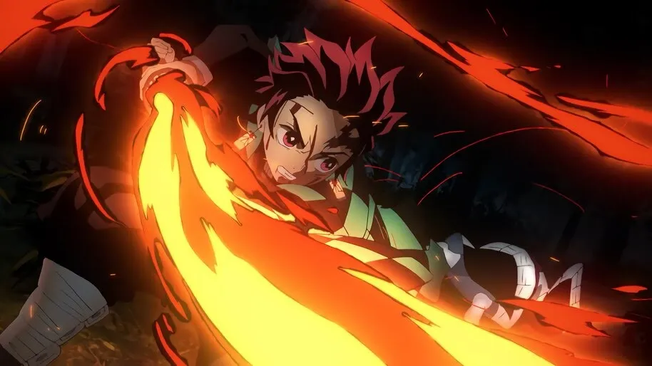
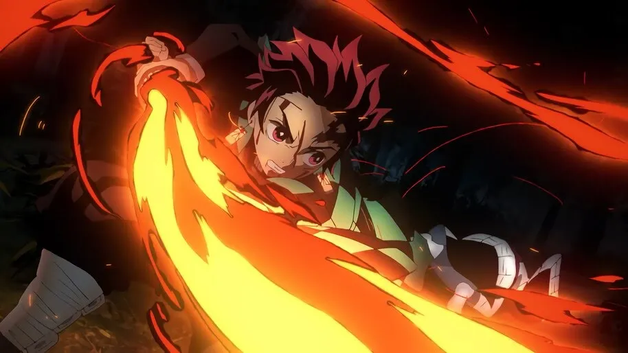

Main Cast
Kimetsu no Yaiba (鬼滅の刃)
Demon Slayer: Kimetsu no Yaiba is a hit manga series by
Koyoharu Gotouge.
It follows the journey of Tanjiro Kamado in becoming a full-fledged demon slayer
after his family's demise by a demon and sister's transformation into one.
The anime adaptation and movie,
produced by Ufotable, a japanese anime studio, was widely received worldwide.

 
